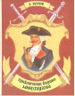

В основу фантастических "Приключений барона Мюнхгаузена" положены рассказы действительно жившего в XVIII веке в Германии барона Мюнхгаузена. Он был военным, некоторое время служил в России и воевал с турками. Вернувшись в свое поместье в Германии, Мюнхгаузен вскоре стал известен как остроумный рассказчик, выдумывавший самые невероятные приключения. Неизвестно, сам ли он записал свои рассказы или это сделал кто другой, но в 1781 году некоторые из них были напечатаны. В 1785 году немецкий писатель Э.Распе обработал эти рассказы и издал их. Впоследствии к ним были присоединены фантастические рассказы других писателей о приключениях Мюнхгаузена. Но автором книги принято считать Э.Распе.